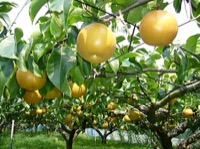

なし（梨）の生産量 都道府県ランキング
1位から3位までと、とれた量
なしが日本でいちばん多くとれるのは千葉県です。2万1,400 tで、全国（17万2,700 t）の12%を占めます。

| 順位 | 都道府県 | 収穫量 | 全国に占める割合 |
|---|---|---|---|
| 1位 | 千葉県 | 2万1,400 t | 12% |
| 2位 | 茨城県 | 1万7,100 t | 9.9% |
| 3位 | 福島県 | 1万4,800 t | 8.6% |
この数字について
- 分類：バラ科
- 全国の収穫量：17万2,700 t
- この数字が表すもの：収穫量（畑や田でとれた重さ）
- 調査：作物統計調査 作況調査（果樹） 令和6年産
- 30県分を調査（調査していない県は順位に入りません）
なしの生産量について、よくある質問
- なしの生産量が日本一の都道府県はどこですか？
- 千葉県です。作物統計調査 作況調査（果樹）（令和6年産）で2万1,400 tでした。
- なしの生産量ランキング2位・3位はどこですか？
- 2位は茨城県（1万7,100 t）、3位は福島県（1万4,800 t）です。
- なしの全国の生産量はどれくらいですか？
- 17万2,700 t（令和6年産）です。